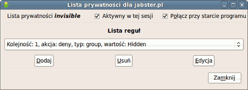
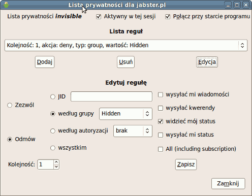
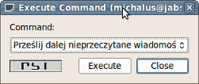

Jabber otwarty protokół komunikacji w czasie rzeczywistym oraz powiadamiania o obecności, oparty o technologię XML (ang. Extensible Markup Language), podstawa otwartego, zatwierdzonego jako standard internetowy przez IETF (ang. Internet Engineering Task Force), protokołu XMPP (ang. Extensible Messaging and Presence Protocol).
- Słowa wstępu
- Nie chcę mi się tego czytać! To jest trudne!
- Utknąłem, nie wiem co teraz zrobić!
- FAQ
- Dodatki
- Linki
- Linki propagandowe
- Autor, dane kontaktowe i licencja tego dokumentu
Chcesz polecić stronę innym? Możesz wykorzystać jeden z bannerów - lista banerów. Chcesz być zawsze na bieżąco obserwuj JabberFAQ w serwisie mikroblogowym Identi.ca! Zmiany w treści tej strony dostępne są w repozytorium w serwisie GitHub.
Słowa wstępu
Instant messaging
Komunikacja błyskawiczna to wymiana zazwyczaj informacji tekstowych w czasie rzeczywistym za pomocą specjalnego programu zwanego komunikatorem internetowym.
Protokół
Protokół to zbiór zasad określający sposób porozumiewania się.
Z... Znamy się mało... Więc może ja
bym powiedział parę słów o sobie, najpierw. Urodziłem się... Urodziłem się
w Małkini w 1937 roku w lipcu. Znaczy w połowie lipca... właściwie w
drugiej połowie lipca właściwie... Yyyy... Dokładnie 17 lipca. Yyyy...
No... to tyle może o sobie - na początek... Czy są jakieś
pytania?
-- Rejs
Niniejszy dokument jest próbą zebrania wszystkich porozrzucanych po Internecie informacji. Początkujący mogą poznać i zrozumieć podstawy, a pozostali użytkownicy poszerzyć wiedzę na temat protokołu XMPP/Jabber i społeczności która go otacza. Na początek warto wspomnieć o rzeczy najważniejszej, która odróżnia Jabbera od innych sieci pozwalających na komunikację w czasie rzeczywistym oraz pokaże sens ewentualnej przesiadki.
Jak dokładnie możemy przeczytać na głównej stronie XMPP został on uznany jako oficjalny standard sieciowy. Ogólnie mówiąc nie jest to kolejny lokalny wymysł jednej osoby czy kolejnej firmy. Jest to nowy standard w sposobie komunikacji. O zaletach rozwiązania docenionego przez ekspertów, oraz jak prosto przesiąść się na XMPP/Jabber, można przeczytać poniżej.
Ostatnie nowości z świata XMPP/Jabber można śledzić na oficjalnym blogu gdzie co jakiś czas podsumowywane są najciekawsze wydarzenia. Nowy standard zdobywa coraz większą popularność i jest wybierany przez duże poważne koncerny oraz małe garażowe firmy.
Google rozwija swoje produkty takie jak komunikator Google Talk oraz platformę komunikacyjną Google Wave. Nokia rozwija własną platformę opartą o Ovi Contacts, która dostępna będzie na wszystkich telefonach tej firmy. Zainteresował się nim także Facebook. A prężnie rozwijana platforma mikroblogowa Identi.ca wykorzystuje go jako podstawowe narzędzie wymiany informacji.
Światowy trend nie ominął Polski. Do grona zwolenników protokołu przyłączył się Urząd Komunikacji Elektronicznej, a Nasza Klasa, jeden z większych polskich portali społecznościowych, wykorzysta protokół w swoim nowym komunikatorze.
To wszystko? Nie, to dopiero początek góry lodowej.
Ile osób korzysta z Jabbera?
Porównując badania firmy Gemius z lipca 2009 zasięg komunikatorów na rynku polskim to 40% sieci Gadu-Gadu oraz 5% sieci XMPP/Jabber (licząc komunikatory Spik, Tlen, Google Talk, oraz wydzielone korzystające z sieci XMPP/Jabber Konnekt i AQQ). W uproszczeniu zakładając 8 milionów polskich użytkowników sieci Gadu-Gadu zasięg sieci XMPP/Jabber w Polsce można oszacować jako milion użytkowników.
Na świecie liczba użytkowników Jabbera szacowana jest na ponad dziesięć milionów użytkowników. Szacunki sięgają nawet 50 milionów użytkowników. Zdecentralizowana struktura sieci i mnogość rozwiązań opartych na tym protokole utrudnia podanie konkretnej liczby. Analizując dane na przestrzeni ostatnich lat widać wzrost zainteresowania i udział większy od najpopularniejszych kiedyś komunikatorów AIM, MSN czy Yahoo.
- 309 milionów użytkowników sieci Skype
- 221 milionów aktywnych użytkowników sieci QQ
- 53 miliony aktywnych użytkowników sieci AIM, 100 milionów wszystkich zarejestrowanych
- Między 40 a 50 milionów użytkowników sieci XMPP/Jabber
- 27 milionów aktywnych użytkowników sieci MSN, 155 milionów wszystkich zarejestrowanych
- 22 milionów aktywnych użytkowników sieci Yahoo
- około 6 milionów aktywnych użytkowników sieci GG
- 4 miliony aktywnych użytkowników sieci, pierwszego komunikatora internetowego, ICQ
Powyższe dane pochodzą z Wikipedii i są jedynie pewnym odniesieniem, a nie dokładnymi danymi. Dokładniejszych i aktualniejszych danych należy poszukać w Internecie. Powyższe dane pochodzą z października 2009.
Nie chcę mi się tego czytać! To jest trudne!
Strona wydaje się duża, jednak pamiętaj, że nie trzeba tutaj czytać więcej niż kilkanaście zdań aby zacząć swoją przygodę z Jabberem. Większość strony to odstępy oraz różne ilustracje. Jeżeli jednak nadal uważasz, że tego tekstu jest i tak za dużo, boisz się, że to wszystko jest za trudne, to przejdź od razu do przeglądu dostępnych klientów Jabbera (programów umożliwiających korzystanie z tej sieci), popatrz jak wyglądają na screenach, wybierz tego najładniejszego i zobacz jak prosto się go używa. To naprawdę nic trudnego. Używanie komunikatora w sieci XMPP/Jabber jest tak samo proste jak każdego innego. Potrzebna jest tylko chwilka aby się przyzwyczaić. Jeżeli nasuną się jakieś pytania wróć później do tekstu.
Przesiadka na Jabbera naprawdę nie trwa długo, nie potrwa więcej niż kilka - kilkanaście minut. Jedyne co trzeba zrobić to
- Wybrać i zainstalować dowolny program umożliwiający korzystanie z sieci Jabber (instalacja to kilka kliknięć myszy)
- Wybrać serwer (rzut okiem na porównanie serwerów z tej strony)
- Skonfigurować nasz program, co zazwyczaj ogranicza się do wpisania naszego loginu i hasła
- Dodać kontakty i ewentualnie skonfigurować transporty do innych sieci (dobrze znane z innych komunikatorów)
Zagubiony? Wybierz klienta jaki ci się najbardziej podoba.
Psi? JAJC? Pidgin? Pandion? Konnekt? Spik? Miranda? Gajim? Google Talk? Kopete? Kliknij na ilustracje klienta, który podoba ci się najbardziej i przeczytaj więcej... Wszystkie poniższe programy pozwalają na korzystanie z Jabbera.


Bardziej szczegółowe opisy najpopularniejszych klientów Jabbera.
Utknąłem, nie wiem co teraz zrobić!
Czym jest JID
JID, skrót od ang. Jabber Identifier, to unikatowy identyfikator określający daną jednostkę w sieci Jabbera. Najłatwiej porównać go do adresu poczty elektronicznej. Tak samo składa się z nazwy użytkownika oraz serwera oddzielonego znaczkiem at (czyli popularną małpką @).
Jeżeli utknąłeś w jakimś momencie zabawy z Jabberem, kompletnie nie wiesz co zrobić i nie masz kogo poprosić o pomoc, możesz zadać pytanie pod jednym z poniższych adresów. Mile widziane także wszelkie sugestie dotyczące tej strony czy znalezione literówki, nieścisłości oraz błędy. Możesz zadać pytanie za pomocą poczty elektronicznej lub zapytać na Jabberze.
- Najłatwiej zadać pytanie na polskim forum Jabbera gdzie ktoś mógł zapytać o podobny problem.
- Kontakt ze mną za pomocą adresu podanego w stopce tej strony.
FAQ
- Co to do licha jest?
- Czy jest mi to potrzebne?
- Zasada działania
- Zdecydowałem się, co mam robić
- Serwer
- Klienty Jabbera
- Mam konto co dalej
- Reszta transportów
Dodatki
- Mapa użytkowników Jabbera
- Emotikony innych sieci
- Import listy kontaktów sieci Gadu-Gadu
- Boty (blogi, prognoza pogody, rozkład jazdy, słowniki, Wikipedia i program telewizyjny)
- Jabber a Tlen
- Szybkie zarządzanie kontaktami na serwerze (Jabber Roster Utility)
- Zasoby, priorytety, cała prawda
- Jabber vs. XMPP
- Stany, widzialny, niewidzialny (XEP-0018, XEP-0126)
- Listy prywatności (XEP-0016)
- Logowanie za pomocą komunikatora (XEP-0070)
- PubSub (XEP-0060)
- PubSub a PEP (XEP-0163)
- Zdalna kontrola własnej sesji (XEP-0050, XEP-0146)
- Linki propagandowe
1. Co to do licha jest?
Slashdot: Open Real Time Messaging System http://slashdot.org/articles/99/01/04/1621211.shtml
Jedna z pierwszych publicznych informacji na temat Jabbera opublikowana przez autora protokołu Jeremiego Millera. Datę 4 stycznia 1999 można przyjąć za datę narodzin XMPP/Jabber.
Jeremie writesJabber is a new project I recently started to create a complete open-source platform for Instant Messaging with transparent communication to other IM systems(ICQ, AIM, etc). Most of the initial design and protocol work is done, as well as a working server and a few test clients.
Powyższe słowa można przetłumaczyć jako: Jabber jest nowym, aktualnie rozpoczętym przeze mnie, projektem tworzenia kompletnej otwartej platformy komunikacji błyskawicznej połączonej z innymi systemami IM (ICQ, AIM, etc.). Większość pracy nad projektowaniem i tworzeniem protokołu została wykonana, podobnie jak działający serwer i kilka testowych klientów.
PC World Komputer: Jabber http://www.pcworld.pl/artykuly/37733.html (styczeń 2004)
Rewolucja w świecie komunikatorów internetowych
Chcesz korzystać jednocześnie z Gadu-Gadu, ICQ i innych komunikatorów w jednym programie? Nie podoba ci się interfejs komunikatora, którego używasz,i chcesz mieć większy wybór opcji? Masz dość pamiętania numerów znajomych z Gadu-Gadu lub ICQ? Straciłeś listę kontaktów, bo Windows miał awarię? Ktoś włamał się na twoje konto w komunikatorze lub podsłuchał twoje rozmowy? Denerwują cię ciągłe awarie serwera twojego komunikatora? Już z tych powodów warto wypróbować zyskujący coraz większą popularność Jabber.
WIEM: Internet http://wiem.onet.pl/wiem/0028a0.html
Jabber opiera się na głównej zalecie Internetu czyli rozproszeniu, dzięki temu jest odporny na problemy innych komunikatorów czyli problemy z centralnymi serwerami je obsługującymi.
Internet, pewna ilość sieci lokalnych (LAN) połączonych w jedną wspólną sieć. Słowo to napisane wielką literą (Internet) oznacza ogólnoświatową sieć komputerową, będącą połączeniem tysięcy sieci lokalnych z całego świata. Podwaliny pod jej powstanie położono na początku lat 60., kiedy amerykańska firma RAND Corporation prowadziła badania nad możliwością dowodzenia i łączności w warunkach wojny nuklearnej. Na podstawie jej raportów podjęto badania nad skonstruowaniem sieci komputerowej mogącej funkcjonować pomimo zniszczenia jej części np. w wyniku ataku atomowego.
2. Czy jest mi to potrzebne?
" (...) Jedziecie do stolicy kraju
kapitalistycznego. Który to kraj ma być może nawet tam i swoje... plusy.
Rozchodzi się jednak o to, żeby te plusy nie przesłoniły wam minusów. (...)
"
-- Miś
Powodów dla których ludzie wybierają protokół XMPP/Jabber jest wiele. Wszystkie argumenty opisane na tej stronie należy ocenić zgodnie z własnymi potrzebami. Zazwyczaj głównym powodem wyboru tego protokołu jest chęć uniezależnienia się od ograniczeń narzucanych przez konkretne firmy lub rozwiązania i wydzielenie niezależnego sposobu komunikacji.
Historia jednego użytkownika
Aby pokazać przykładową drogę chciałbym opisać w kilku zdaniach swoją historię. Rozpocząłem przygodę z komunikatorami w chwili pojawienia się pierwszego komunikatora internetowego ICQ. Akronim ICQ i jego rozwinięcie I seek You to marketingowy szał, który można śmiało porównać do dni dzisiejszych i aplikacji typu Twitter czy Facebook. Po niedługim czasie korzystałem z jego polskiego odpowiednika, wtedy dopiero raczkującego, Gadu-Gadu (koniec roku 2000).
W miarę upływu czasu pojawiła się chęć eksperymentowania i krótka przygoda z multikomunikatorem Miranda. Oryginalny komunikator przestał wystarczać i rozwijał się w kierunku, który dla mnie był nie do przyjęcia.
W tym momencie historii pojawia się Jabber - wtedy nikt jeszcze nie wie co to znaczy XMPP. Którego, jak większość, na początku nie rozumiem. Dla mnie to kolejny komunikator jak Miranda - używam dodatku do Mirandy i dedykowanego komunikatora JAJC.
Iskrą, która spowodowała postanowienie przejścia całkowicie na sieć XMPP/Jabber była sobota 10 stycznia 2004, kiedy sieć Gadu-Gadu nie działała cały dzień. Wtedy także napisałem pierwsze zdania tego dokumentu - tak aby ułatwić start w nowej sieci moim znajomym.
Dalej apetyt rósł w miarę jedzenia. Odkrywałem zalety widząc co straciłbym gdyby nie tamta odważna decyzja. Ludzie często pytają - a co z dotychczasowymi kontaktami w innych sieciach? Moja lista kontaktów ogranicza się do dwudziestu kontaktów sieci XMPP/Jabber i praktycznie nieużywanych pojedynczych kontaktów innych sieci.
2.2. Zalety Jabbera
Główną zaletą Jabbera jest jego uniwersalność. Zdobywanie coraz to nowych sieci i pozwalanie na komunikację miedzy milionami ludzi bez względu na wykorzystywaną technologie czy platformę.
- Oficjalny standard sieciowy.
- Pozbawiony reklam i niezależny od żadnej firmy.
- Nie posiada centralnego punktu, którego awaria powoduje zatrzymanie całej sieci.
- Zamiast numeru
185 500 236własny, przyjazny identyfikatorsławek@borewicz.com. - Wykorzystuje szyfrowane połączenia dla komunikacji pomiędzy klientem a serwerem, a także pomiędzy serwerami.
- Umożliwia wykorzystanie dodatkowego szyfrowania pomiędzy klientami za pomocą PGP.
- Otoczony przez idee open source cały czas jest prężnie rozwijany.
- Unikalne cechy i rozszerzenia takie jak np.: rozmowy głosowe, zaawansowane filtrowanie komunikacji, obsługa logowania do innych systemów, zaawansowana publikacja treści, zdalna kontrola własnego komunikatora i inne.
- Wbudowany mechanizm transportów umożliwia komunikację z innymi sieciami i komunikatorami.
- Dostępny na każdą platformę i systemy operacyjne takie jak np.: Windows, Linux, MacOS i inne.
2.3. Rzeczy, które mogą przeszkadzać w Jabberze
- Jabber to nie jest multikomunikator i jego rozwój nie idzie w kierunku obsługi wszystkich innych sieci. Transporty zapewniające kontakt z innymi sieciami to tylko dodatek do Jabbera, a nie jego podstawowa funkcjonalność.
- Wbudowany mechanizm transportów zapewnia prawie całą funkcjonalność. Przykładowo w nie mamy możliwości przesyłania pliku miedzy użytkownikiem Jabbera a użytkownikiem sieci Gadu-Gadu, czy wklejenia obrazka w okno rozmowy (co także jest rozszerzeniem tamtego komunikatora).
- Rozszerzenia dla rozmów głosowych czy wideo konferencji nie są jeszcze ukończone i nie są tak wygodne jak rozwiązania konkurencji (np. Skype).
- Jabber to nie jest magia ani perpetuum mobile, jeżeli źle się wybierze serwer on także może czasami nie działać. Na szczęście istnieją wtedy setki innych, które działają wyśmienicie.
2.4. Dlaczego akurat Jabber?
Protokół
Protokół to zbiór zasad określający sposób porozumiewania się.
Warto powtórzyć, jedną i chyba najważniejszą rzecz. Jabbera warto wybrać z jednego prostego powodu. Jest to standard sieciowy. Zamiast pytać dlaczego mam używać Jabbera zapytaj dlaczego używasz protokołu HTTP do serfowania po Internecie, dlaczego używasz protokołu FTP do pobierania plików, dlaczego używasz protokołu SMTP do obsługi poczty? Chociaż protokół XMPP (podstawa i rdzeń wszystkiego co określane jest jako Jabber, dla uproszczenia można przyjąć, że oznacza to prawie to samo - jakie są różnice można sprawdzić tutaj) nie jest jeszcze tak popularny jak trzy wymienione powyżej, to z pewnością z biegiem czasu dołączy do grona swoich powszechnie znanych kolegów.
Jak widać powyżej wybieranie innych rozwiązań na dłuższą metę mija się z celem, to tak samo jak robienie przeglądarki internetowej, która nie potrafiłaby zgodnie z protokołem HTTP pobierać stron WWW z sieci. Co nam by przyszło z tego gdybyśmy nawet zrobili sobie własny protokół i kilka serwerów go obsługujących, jeżeli cały świat używa czegoś zupełnie innego. Jabber to właśnie identyczny przykład. Serwerów Jabbera na świecie są setki, a może tysiące. Użytkowników jeszcze więcej. Wizja jednego komunikatora jest bardzo kusząca. Może niedługo rozmowa z każdym w czasie rzeczywistym będzie tak naturalna jak wysłanie e-maila, do tego starcza tylko pytanie "Podaj swój adres".
Co daje standard taki jak XMPP (Jabber)?
- Nieważne czym
- Nieważne gdzie
- Nieważne z kim
- Ważne jest tylko jak, zawsze w ten sam sposób uniwersalny i pewny
Każdy system operacyjny, każde możliwe urządzenie, platforma, w każdym miejscu, z każdym tak samo. Nie musisz nic zmieniać. Używaj dalej tego systemu operacyjnego, tego komputera, tego języka - Jabber jest całkowicie uniwersalny.
Dobrze opracowany standard, taki jak XMPP (Jabber) to duża zaleta. Nie jest się narażonym na błędy i niedopracowanie rozwiązań. Dołączając otwartość oprogramowania uzyskujemy godny zaufania protokół oraz prawie wolne od błędów oprogramowanie. Przykładowo błędne rozwiązania przyjęte w sieci Gadu Gadu przez długi czas powodowały, że nie zawsze połączenie z serwerem było połączeniem szyfrowanym, pomimo takiego ustawienia w opcjach. Drugim takim niedopatrzeniem jest kolejka wiadomości oczekujących (wysyłanych do rozłączonego użytkownika). Po jej przepełnieniu wiadomości są "gubione", a osoba wysyłająca je nie otrzymuje o tym żadnego komunikatu, mimo że wiadomo że treść nigdy nie trafi do adresata. Takie błędy powodują, że tracimy zaufanie do danych rozwiązań. Chociaż wiadomo, że zawsze może przytrafić się jakiś błąd to w otwartym standardzie, gdzie każdy go może zauważyć, prawdopodobieństwo ich wystąpienia jest zminimalizowane.
2.5 Powtórka z historii
E-mail jako taki został wymyślony w roku 1965, autorami pomysłu byli Louis Pouzin, Glenda Schroeder i Pat Crisman - wówczas jednak usługa ta służyła jedynie do przesyłania wiadomości od jednego użytkownika danego komputera do innego użytkownika tej samej maszyny, a adres emailowy w zasadzie jeszcze nie istniał. Usługę polegającą na wysyłaniu wiadomości od użytkownika jednego komputera do użytkownika innego wymyślił w roku 1971 Ray Tomlinson, on również wybrał znak @ (at) do rozdzielania nazwy użytkownika od nazwy maszyny (a później nazwy domeny internetowej). Na początku do wysyłania e-maili służył protokół CPYNET, później wykorzystywano FTP, UUCP i wiele innych protokołów, a na początku lat 80. Jonathan B. Postel napisał specjalnie do tego celu protokół SMTP.
-- Poczta elektroniczna, Wikipedia
Podczas pobierania i wysyłania poczty elektronicznej dziś nikt nie zastanawia się czy wysyła ją na serwer pocztowy, który używa danego oprogramowania. Nie zastanawia się także, czy nadawca listu, który właśnie czyta, używa danego klienta poczty elektronicznej. Uniwersalne protokoły pozwalają nam na skupienie się na czytaniu treści bez zwracania uwagi na szczegóły techniczne. Oczywiście nie było tak zawsze. Stan dzisiejszy to efekt około 20 lat wymyślania nowych rozwiązań oraz szukania wspólnego standardu.
Czy podobna idea podczas rozmów za pomocą komunikatora nie jest kusząca? Gdyby nagle znikł podział na sieci i każdy mógłby rozmawiać z każdym. Właśnie dlatego powstał Jabber. Jabber to krok do prostej komunikacji.
3. Zasada działania
Sieć Jabbera w swoim działaniu podobna jest do działania poczty
elektronicznej. Mamy wiele serwerów, które komunikują się między sobą. Na
rysunku mamy przykładowe serwery alfa.org,
delta.pl oraz tango.de. Wszystkie serwery
komunikują się ze sobą co zaznaczone jest jako ciemno fioletowe połączenia
[3]. Serwery na rysunku
komunikują [2] się także
z wszystkimi innymi serwerami na świecie oznaczonych jako inny serwer.

Na serwerach użytkownicy rejestrują swoje konta. Użytkownik rajmund zarejestrował się na serwerze
tango.de, użytkownik michal zarejestrował się na serwerze
alfa.org, a użytkownik aneta ma konta na dwóch serwerach alfa.org
oraz delta.pl. Posiadanie konta na danym serwerze jest
jednoznaczne z posiadaniem identyfikatora nazywanego Jabber ID
(w skrócie JID).
Użytkownik rajmund identyfikowany jest przez JID rajmund@tango.de,
michal jako michal@alfa.org, a aneta
posiada dwa konta na różnych serwerach, czyli także dwa identyfikatory
aneta@delta.pl oraz aneta@alfa.org. Wszyscy nasi
przykładowi użytkownicy są zalogowani do swoich serwerów - symbolizuje to
jasno fioletowa linia [4].
Użytkownik aneta zalogowany jest jednocześnie do dwóch
serwerów, a użytkownik michal korzysta z funkcji oferowanej
przez sieć Jabbera czyli podwójnego logowania. Inne sieci, gdy próbujemy
zalogować się podwójnie, odrzucają jedno z połączeń. Tutaj mamy możliwość
wielokrotnego logowania i określenia ważności naszego połączenia przez
nadanie mu odpowiedniego priorytetu. Wiadomości do nas dochodzą do
komputera gdzie zalogowani jesteśmy z wyższym priorytetem.
Przykładowy michal jest teraz w pracy, gdzie zalogowany
jest z priorytetem równym 5. Wszystkie wiadomości do niego kierowane są do
komputera w pracy. Kiedy skończy pracę i wyłączy swój komputer, pozostanie
jeszcze komputer domowy, który cały czas jest zalogowany do sieci. Teraz
wszystkie wiadomości trafiają do niego. Istnieje także możliwość czytania
własnej korespondencji odebranej na zdalnym komputerze.
Wszyscy nasi użytkownicy mogą się między sobą komunikować. Użytkownik
rajmund może wysłać wiadomość do użytkownika na innym
serwerze, czyli przykładowo do użytkownika aneta. Użytkownik
aneta posiada dwa konta na oddzielnych serwerach. Jeżeli jeden
z serwerów przestanie działać, zawsze ma do dyspozycji swoje drugie konto.
Mimo awarii działania jednego serwera cała sieć działa prawidłowo. Kontakt
utracony jest nie ze wszystkimi użytkownikami, ale tylko z użytkownikami
wyłączonego serwera.
Możliwa jest także komunikacja z innymi sieciami typu Gadu-Gadu czy ICQ
[1]. Użytkownik
komunikuje się tylko z własnym serwerem, przez serwer wysyła wiadomości, a
jego kontakty przechowywane są także na serwerze. Jeżeli nasz serwer
umożliwia nam komunikację z innymi sieciami przez tzw. transporty, nasza
wiadomość przeznaczona do użytkownika danej sieci dochodzi do serwera, a
serwer po przekształceniu jej na odpowiedni format przesyła dalej do
serwera innej sieci. Oczywiście musimy posiadać konto (numer
GG, czy UIN) w danej sieci, żeby do niej
cokolwiek wysłać czy odbierać. Najprościej wyobrazić sobie transport jako
funkcjonalność tłumaczącą komunikaty jednej sieci na komunikaty drugiej
sieci.
4. Zdecydowałem sie, co mam robić
Wszelkie podstawowe informacje uzyskasz na tej stronie. Na początek musisz wiedzieć, że Jabber nie działa tak samo jak inne komunikatory. Nie posiada on centralnego punktu, serwera. Zasada działania podobna jest do działania poczty elektronicznej. Na świecie jest tysiące serwerów, które komunikują się ze sobą. Tak samo jak w poczcie musisz wybrać serwer, który najbardziej tobie odpowiada oraz wymyślić sobie swój identyfikator, który będzie nas na tym serwerze identyfikował.
Więcej informacji znajduje się na oficjalnych stronach poświęconych Jabberowi
5. Serwer
Serwer
Serwer to program udostępniający swoje usługi innym programom, które są nazywanymi klientami.
Najważniejszy jest wybór odpowiedniego serwera. Dalsze poczynania z XMPP/Jabber zależą wyłącznie od niego. Oczywiście nic nie stoi na przeszkodzie aby mieć dwa lub więcej kont i używać ich zamiennie. Nie można powiedzieć "Jabber mi nie działa" - sieć XMPP/Jabber działa bardzo dobrze, to jedynie twój serwer może mieć problemy. Odpowiedni wybór uchroni nas od wszelkich komplikacji.
Czyli powtórzę jeszcze raz aby bezproblemowo korzystać z sieci Jabbera trzeba koniecznie wybrać stabilny i godny zaufania serwer. Reguły nie ma, może to być jeden z wielkich czołowych serwerów publicznych, ale może lepiej wybrać mały osiedlowy prowadzony przez znajomego admina.
Wybierając serwer prowadzony przez hobbystów otrzymamy serwer o największej liczbie nowych rozwiązań, ale bez wsparcia finansowego będzie on prawdopodobnie czasem niestabilny. Może nawet pewnego dnia po prostu zniknąć. Wybierając serwer za którym stoi firma, i pieniądze, zawsze musimy pamiętać, że rządzić się on może własnymi prawami i prawdopodobnie działa po to żeby na siebie zarobić. Trzeba wyśrodkować swoje potrzeby, oczekiwania i wybrać serwer najlepszy dla siebie.
Jeżeli zależy nam na oficjalnym identyfikatorze wybierzemy sobie serwer
jabber.org. Jeżeli wolimy coś krótszego to może zainteresujemy
się serwerem jid.pl. Jeżeli chcemy serwer komercyjny mamy
serwer firmowany przez Wirtualną Polskę czyli jabber.wp.pl.
Mamy naprawdę duży wybór i należy ten fakt wykorzystać. W ostateczności
możemy samemu postawić własny serwer, który, jeżeli jesteśmy wymagającym
użytkownikiem, z pewnością będzie najbardziej wygodnym dla nas
rozwiązaniem.
- jabber.org
- jabber.uznam.net.pl
- jabber.piekary.net
- jabber.elektron.com.pl
- jabster.pl
- jabber.wp.pl
- histeria.pl
- jabber.gda.pl
- jabber.2000-plus.pl
- jabber80.com
- jabber.alternatywa.info
- KDETalk.net
- ubuntu-users.com
- jid.pl
- jabbim.pl
Jeżeli dysponujemy odpowiednim komputerem, możemy postawić własny serwer Jabbera, który oczywiście jest darmowy.
- Przykładowy serwer Jabbera/XMPP, jak zachwalają twórcy jest on darmowy, wieloplatformowy (napisany w Javie), prosty w instalacji i z wygodnym interfejsem via WWW. Możesz postawić swój serwer w kilkanaście minut tak prosto jak zainstalowałeś swojego klienta. Nie musisz spędzić całego dnia na jego konfiguracji.
- Lista serwerów które możemy uruchomić na własnej maszynie
Enterprise Instant Messaging
Poniższy kawałek to krótki opis produktów firmy Jive. Dzięki nim możemy bardzo szybko zbudować we własnej firmie własną sieć służącą do wewnętrznej komunikacji. Pokazać chcę także, jak prosto można wykorzystać Jabbera do stworzenia samemu podobnych rozwiązań. Produkty Jive to bardzo prosty w obsłudze serwer, klient oraz narzędzia dodatkowe ułatwiające zarządzanie całością. Ciekawym rozwiązaniem jest tzw. skinning czyli proste dostosowanie komunikatora do danej firmy. Mamy możliwość dodania własnego logo, zamknięcia i ograniczenia komunikacji do firmowego serwera. Całość jest dodatkowo wspierana przez menadżera, który ułatwia łatwe zapanowanie nad wszystkim.
Ponieważ używanie w firmach komunikatorów to rzecz dziś raczej naturalna więc stworzenie własnego rozwiązania będzie tylko lekkim ustandaryzowaniem samej komunikacji. Ograniczenie do firmowego serwera i firmowego komunikatora może zwiększyć bezpieczeństwo. Dodanie identyfikatorów podobnych, czy wręcz identycznych, do tych używanych w poczcie elektronicznej sprawi, że komunikacja za pomocą komunikatora stanie się bardziej naturalna. Do tego warto wspomnieć o takich aspektach jak odgórne zarządzanie listą kontaktów użytkowników. Dodawanie automatyczne pracowników współpracujących ze sobą, działów czy osoby z tzw. pomocy technicznej. Wszystkie te rzeczy to rozwiązania raczej niespotykane w innych protokołach służących do komunikacji błyskawicznej. Enterprise Instant Messaging to rzecz przydatna. Należy wspomnieć, że rozwiązania takie to dobry pomysł także w innych organizacjach, szkołach, uczelniach wyższych.
6. Klient Jabbera
Klient
Klient
Klient to program pozwalający na połączenie się z serwerem i korzystanie z jego usług.
Słowami wstępu warto zacytować Encyklopedię Wikipedia i poprawnie zdefiniować klienta - tak aby uniknąć mylnego łączenia sieci z samym klientem, co ma miejsce przykładowo w sieci Gadu-Gadu. Jabber nie ma odgórnie narzuconego jednego programu. Co więcej, samych programów umożliwiających korzystanie z Jabbera jest dziesiątki.
W odniesieniu do komputerów klient oznacza oprogramowanie
korzystające z usług dostarczanych przez serwer. Przykładem może być cała
rodzina oprogramowania typu telnet czy ssh. Jednym z klientów w tej
rodzinie jest putty - program pozwalający użytkownikowi na korzystanie z
usług na zdalnym komputerze.
- Wikipedia, Wolna
Encyklopedia
Klient dedykowany
Gdy rozumiemy już, że programów którymi możemy się komunikować wewnątrz sieci XMPP/Jabber jest wiele musimy zdecydować się czy potrzebny nam jest klient dedykowany tej sieci, czy starczy nam jeden z wielu multikomunikatorów.
Klient dedykowany jednej sieci to program, którego celem nadrzędnym jest obsługa danej sieci. Przykładem klientów dedykowanych i obsługujących tylko sieć XMPP/Jabber są, między innymi, Psi i Gajim. Wybór klienta dedykowanego sprawia, że dostajemy program napisany tak aby w pełni korzystać z wszystkich możliwości Jabbera. Rozwój takiego programu jest zgodny z kierunkiem rozwoju protokołu.
Innym rozwiązaniem jest wybór programu, który obsługuje wiele sieci jednocześnie. Programy takie jak np.: Pidgin nazywamy multikomunikatorami. Po uruchomieniu łączą się z wieloma serwerami różnych sieci i umożliwiają korzystanie z ich funkcjonalności. Jedną z wielu takich sieci jest XMPP/Jabber. Wybór multikomunikatora sprawia, że otrzymujemy zazwyczaj tylko podstawową listę funkcjonalności, a rozwój samego programu czasami może nie pozwalać na używanie wszystkich rozszerzeń protokołu.
Oczywiście klient dedykowany nie oznacza, że nie możemy komunikować się z innymi sieciami. Realizowane jest to jednak w inny sposób. Zamiast tak jak multikomunikator łączyć się bezpośrednio do serwera obcej sieci używany jest transport, tłumaczący komunikacje, na serwerze Jabbera. Szczegóły opisano w sekcji Zasada działania.
Wybór rozwiązania nie jest jednoznaczny i dla każdego z nas inna konfiguracja może być wygodniejsza w użyciu.
Klient dedykowany daje nam największą wygodę używania wszystkich możliwości XMPP/Jabber. Wymaga jednak od nas użycia transportów do komunikacji z innymi sieciami. To oznacza dla nas, że otrzymamy zazwyczaj bardziej zawodną i uproszczoną komunikację z użytkownikami innych sieci.
Multikomunikator daje nam natomiast natywną obsługę pozostałych sieci, bez pośrednictwa transportów serwera, ale zazwyczaj oznacza to skromniejszą liczbę funkcji interesującego nas Jabbera. Multikomunikator jest także rozwiązaniem uzależniającym nas od niego. Nie jest tak łatwo przenośny jak skonfigurowane konto na serwerze Jabbera gdzie konto jest zawsze gotowe do pracy na każdym kliencie zgodnym z protokołem.
Wybór klienta
Wracając do sprawy ważnej czyli wyboru klienta dla nas możemy przejrzeć
aktualne wyniki wyszukiwarki Google jabber client (zobacz
wyniki szukania "jabber client"), albo skorzystać z pomocy strony
z listą
klientów XMPP/Jabber na stronie Wikipedia. Klientów jest dużo, są one
dostępne na wiele platform: Amiga, MacOSX, MacOS9, J2ME RIM, J2ME, Java,
PalmOS, Symbian, WinCE, Linux/Unix, Windows, Przeglądarki Internetowe
(WWW), PocketPC, BeOS, Smartphone czy jako plugin Mozilla.
Klienty Jabbera szerzej opisane na tej stronie
- Psi; wieloplatformowy klient Jabbera;
- Pandion; lekki windowsowy klient Jabbera;
- Pidgin; wieloplatformowy multikomunikator i klient Jabbera;
- Miranda; lekki multikomunikator;
- Gajim; komunikator dla użytkowników GTK+ i nie tylko;
- Google Talk; komunikator Google oparty o otwarte technolgie;
- Kopete; Miły dla oka komunikator dla KDE;
- iChat; Komunikator dla komputerów z pod znaku jabłka;
Klienty nieopisane tutaj szerzej, ale także warte uwagi
- EKG2; klient Jabbera w trybie tekstowym;
- JWChat; klient Jabbera napisany w Java Script;
- Jeti; kolejny klient Jabbera napisany w Javie.
- Meebo; interesujący klient na stronie WWW;
- JBother; napisany w Javie więc dostępny na każdej platformie oraz na stronie WWW;
- WengoPhone; wieloplatformowy klient Jabbera oraz SIP
- Nokia Ovi Contacts; natywna platforma komunikacyjna Nokii dla telefonów z systemem operacyjnym S60
- Empathy; multikomunikator dla GNOME i okręt flagowy projektu Telepathy;
Polskie akcenty jabberowe, czyli klienty
umożliwiające korzystanie z Jabbera pisane przez Polaków 
- Spik; komunikator portalu Wirtualna Polska;
- WTW; nazywany przez niektórych następcą Konnekta;
- AQQ; polski multikomunikator dla Windows;
- Tlen; który w nowej wersji został otwarty na inne serwery XMPP/Jabber;
- Gnu Gadu; polski multikomunikator napisany dla GTK+;
- Papla; dostępny także na telefon komórkowy;
- Konnekt;
Aktualna lista dostępna jest na na stronach encyklopedii Wikipedia oraz na stronach protokołu. Można porównać także możliwości klientów Jabbera z klientami innych sieci.
Adium X, Agile, Akeni, Ayttm, BuddySpace, Cabber, centericq, Chatopus, Chatterbox, CJC, Coccinella, Colibri, e4Applet, Enigma3, EntreatCE, Exodus, Fire, Gabber1, Gabber2, Pidgin, GCN, Gnome Jabber, GNU Gadu, Gossip, GreenThumb, Gush, IMChat, IMCom, imov, IR-Jabber, IRSIM, Jabber for BeOS, Jabber Messenger J2ME, Jabber Messenger Pocket, Jabber Messenger RIM, Jabber Messenger Smartphone, Jabber Messenger Symbian, Jabber Messenger WebClient, Jabber Messenger Windows, jabber.el, JabberApplet, JabberFoX, Jabbernaut, JabberWana, Jabberwocky, JabberX, Jabberzilla, JAJC, Jeti, JWChat, JWGC, Kava, kf, KomKom, Kopete, Lluna, MessageMate, MiMessenger, MirandaIM, mjabber, myJabber, myJabber IM for Pocket PC, neos, Nitro, Pandion, Proteus, Psi, Rhombus IM Client, Rhombus IM Mobile Client, Rival, SIM, Syndicon, TipicIM, TipicMe, Tkabber, tkJabber, TransactIM, Trillian Pro, TSIM, TVJab, UNIVerse, Vista, Spik, wxSkabber, Yabber.
Psi
Jeden z najstarszych i najchętniej używanych dedykowanych komunikatorów XMPP/Jabber. Ceniony za swoją dojrzałość i stabilność. Projekt posiada otwarty kod i gromadzi w około siebie dużą społeczność użytkowników. Jest jedynym z najbardziej rozbudowanych komunikatorów sieci XMPP/Jabber.
Psi można polecić dla wszystkich zaawansowanych użytkowników używających systemów Windows lub systemów linuksowych korzystających z Qt.
- Dostępny na wiele platform;
- Możliwość podłączenia wielu kont;
- Polska wersja językowa i sprawdzanie pisowni w oknie rozmowy;

- Duża społeczność związana z projektem;
-
Wsparcie dla wybranych rozszerzeń protokołu
XMPP/Jabber
- XEP-0016 / Privacy Lists;
- XEP-0027 / Szyfrowanie rozmów za pomocą PGP;
- XEP-0070 / Logowanie za pomocą komunikatora;
- XEP-0050 / Ad-Hoc Commands;
- XEP-0163 / PEP (Personal Eventing Protocol);
- XEP-0166 i XEP-0167 / Rozmowy głosowe;


Gajim
Gajim to jeden z najbardziej rozbudowanych komunikatorów sieci XMPP/Jabber. Projekt posiada otwarty kod i gromadzi w około siebie dużą społeczność użytkowników. Więcej informacji na stronie domowej programu.
Komunikator Gajim polecić można wszystkim zaawansowanym użytkownikom linuksowym, szczególnie tym którzy używają GTK+.
- Dostępny na wiele platform;
- Możliwość podłączenia wielu kont;
- Polska wersja językowa i sprawdzanie pisowni w oknie rozmowy;
- Duża społeczność związana z projektem;
-
Wsparcie dla wybranych rozszerzeń protokołu
XMPP/Jabber
- XEP-0016 / Privacy Lists;
- XEP-0027 / Szyfrowanie rozmów za pomocą PGP;
- XEP-0070 / Logowanie za pomocą komunikatora;
- XEP-0050 / Ad-Hoc Commands;
- XEP-0163 / PEP (Personal Eventing Protocol);

Pidgin
Rozbudowany multikomunikator dostępny w polskiej wersji językowej. Wśród listy obsługiwanych protokołów znajduje się XMPP/Jabber. Podstawowe funkcjonalności możliwe do rozbudowy dzięki mechanizmowi wtyczek. Więcej informacji na stronie domowej komunikatora.
Komunikator Pidgin można polecić początkującym i zaawansowanym użytkownikom, którzy nie chcą korzystać z rozszerzeń protokołu XMPP, systemów linuksowych, szczególnie użytkownikom menadżera okien GNOME.
- Dostępny na wiele platform;
- Możliwość podłączenia wielu kont;
- Polska wersja językowa i sprawdzanie pisowni w oknie rozmowy;
- Rozszerzalny przez system wtyczek;
- Dostępny także w wersji tekstowej;
- Brak wielu zaawansowanych funkcji protokołu XMPP/Jabber;

Finch
Ciekawostką jest tekstowa wersja komunikatora Finch. Jest ona oparta o te same biblioteki co Pidgin i przeznaczona dla systemów unixowych. Finch uruchomiony na komputerze gdzie działał już Pidgin będzie korzystał z tych samych plików konfiguracyjnych. Umożliwia to łatwe uruchomienie tego komunikatora zdalnie spoza domu bez konieczności ponownego konfigurowania czy rozdwajania historii rozmów. Zrzut ekranu komunikatora Finch można zobaczyć poniżej.

Miranda
Rozbudowany multikomunikator w polskiej wersji językowej. Posiada bardzo dużą liczbę rozszerzeń i rozbudowane możliwości zmiany domyślnej konfiguracji. Dzięki modularnej budowie można osiągnąć minimalistyczną wersję potrzebującą do uruchomienia niewielką ilość zasobów systemowych. Dzięki przemyślanemu interfejsowi możliwy jest do osiągnięcia minimalistyczny wygląd. Więcej informacji na stronie domowej programu oraz na polskim forum.
Multikomunikator Miranda polecać można wszystkim zaawansowanym użytkownikom systemów Windows.
- Możliwość podłączenia wielu kont;
- Polska wersja językowa i sprawdzanie pisowni w oknie rozmowy;
- Przy odpowiedniej konfiguracji niskie wymagania sprzętowe;
- Rozszerzalny przez system wtyczek;
- Duża polska społeczność
związana z projektem;
- Wsparcie dla wybranych rozszerzeń protokołu XMPP/Jabber Pełna lista wspieranych rozszerzeń na stronie wiki projektu
- Dostępny tylko dla Windows;

Google Talk
Prosty komunikator dedykowany XMPP/Jabber oferujący rozmowy głosowe. Oprócz funkcji dobrze znanych z komunikatorów program posiada dobrą integracje z serwisem poczty elektronicznej Google Mail. Więcej informacji na oficjalnej stronie projektu.
Komunikator Google Talk polecić można wszystkim użytkownikom systemów Windows, którzy cenią sobie integrację z usługami firmy Google.
- Zintegrowany z serwisem poczty elektronicznej Google Mail;
- Dostępny z poziomu WWW;
- Możliwość uruchomienia usługi pod własną domeną;
-
Wsparcie dla wybranych rozszerzeń protokołu
XMPP/Jabber
- XEP-0166 i XEP-0167 / Rozmowy głosowe;
- Aktualnie nierozwijany;
- Dostępny tylko dla Windows;
- Działa tylko z serwerem Google;
- Google wprowadza pewne odstępstwa od protokołu XMPP/Jabber;

Pandion
Łatwy w obsłudze multikomunikator dostępny w polskiej wersji językowej. Wśród listy obsługiwanych protokołów znajduje się także XMPP/Jabber. Komunikator nie obsługuje dużej części zaawansowanych funkcji protokołu. Więcej informacji na stronie domowej.
- Polska wersja językowa;
- Dostępny tylko dla systemów Microsoft Windows, bardzo mocno powiązany z Internet Explorerem;
- Brak wielu zaawansowanych funkcji protokołu XMPP/Jabber


Kopete
Rozbudowany multikomunikator pisany specjalnie dla KDE. Rozszerzalny o dodatkowe wtyczki. Umożliwia zaawansowaną konfigurację, wygląd konwersacji, konfigurowalne awatary. Więcej informacji na stronie domowej projektu.
Kopete można polecić użytkownikom systemów linuksowych, którzy korzystają z menadżera okien KDE.
- Duża społeczność związana z projektem;
- Dostępny tylko dla systemów unixowych;

iChat
Podstawowy multikomunikator w systemach Mac OS X. Dostępny za darmo dla każdego użytkownika komputerów Apple. Obsługuje protokoły AOL (Aim screen name, ICQ Uin, netscape.net screen name, oraz dedykowane konto .mac) i Jabber. Chociaż brak w nim wsparcia dla przesyłania plików między różnymi klientami zgodnymi z XMPP to przyjazny interfejs, prosta obsługa i integracja z systemem operacyjnym sprawił, że iChat zyskał sobie wielu zwolenników. Więcej na stronie producenta.
Co oczywiste komunikator iChat polecić można użytkownikom systemów Mac OS X jeżeli nie wybrali komunikatora Psi lub Adium.
- polska wersja językowa (ver. 10.5)
- integracja z systemem operacyjnym
- wsparcie dużej firmy - Apple
- prosta obsługa
- przyjazny interfejs
- dostępny tylko dla Mac OS
- brak zaawansowanych funkcji takich jak np.: przeglądarka usług na serwerze
(Informacje o iChat i zrzuty ekranów zebrane przez Glubone. Lista kontaktów pochodzi z jednej ze stron w sieci.)
7. Mam konto, co dalej
Transport
Transport na serwerze Jabbera, zwany także bramką, od ang. gateway, to specjalny program tłumaczący informacje pomiędzy różnymi sieciami. Umożliwia to dostęp i rozmowę z użytkownikami innych sieci takich jak GG czy ICQ.
roster
Roster to tzw. lista kontaktów, ang. contact list, przechowywany na serwerze spis wszystkich znajomych użytkowników.
Jeżeli wybór komunikatora jest już za tobą, posiadasz już konto na serwerze i je poprawnie skonfigurowałeś. Możesz spróbować dodać pierwszego użytkownika do swojej listy kontaktów. Lista kontaktów jest trzymana na serwerze, więc mamy ją zawsze pod ręką obojętnie z jakiego miejsca się łączymy.
Każdy użytkownik jest opisany przez swój identyfikator na danym
serwerze. Identyfikator ten nazywany jest Jabber ID, w skrócie
JID. Jego
znaczenie odszyfrowujemy podobnie jak adres poczty elektronicznej. Dla
użytkownika gosia@chrome.pl oznacza on danego użytkownika o
identyfikatorze gosia na serwerze chrome.pl.
Jeżeli chcemy dodać do naszej listy kontaktów, nazywanej też czasami
jako roster,
użytkownika, ograniczamy się do wpisania jego JID. Następnie musimy wysłać swoją
autoryzację (authorize to) oraz poprosić o autoryzację (authorize from) od
danego użytkownika. Bez autoryzacji nie będziemy widzieć czy dany
użytkownik jest online.
Teraz przyszedł czas na dodanie użytkowników innych sieci, czyli
skorzystanie z transportów. Każdy serwer posiada własne transporty, czyli
bramki konwertujące wiadomości pomiędzy różnymi sieciami. Pierwszą rzeczą
jaką musimy zrobić to sprawdzić jakie transporty są na naszym serwerze.
Następnie lokalizujemy przykładowo transport GG i najczęściej prawym kliknięciem dostajemy
się do menu podręcznego gdzie można wybrać opcje zarejestruj.
Po otworzeniu okienka wpisujemy swój numer GG oraz hasło. Po zaakceptowaniu i krótkiej chwili
otrzymujemy informacje że zostaliśmy autoryzowani przez bramkę. Od tej
chwili możemy dodawać użytkowników GG
do swojej listy. JID dla takiego użytkownika wygląda
zazwyczaj podobnie do 123456@gg.chrome.pl.
8. Reszta transportów
Oprócz transportów typu GG, ICQ, MSN za pomocą których możemy komunikować się z innymi sieciami, istnieją także inne. Warto zarejestrować się w katalogu publicznym. Tak aby inni mogli nas wyszukać gdy zajdzie taka potrzeba. Można sprawdzić pogodę w pogodynce czy wysłać pocztę. Szczegóły dotyczące transportów znajdują się zazwyczaj na serwerach. Poniżej przykład pewnego serwera i rozszerzeń na nim zainstalowanych. Lista całkiem imponująca. Listę taką jak ta można uzyskać w każdym kliencie, który posiada tzw. przeglądarkę usług na serwerach. Załączony przykład to usługi wypisane przez komunikator Psi. Wiele multikomunikatorów nie posiada tej funkcjonalności.

Główne typy rozszerzeń serwera ze względu na ich funkcjonalności można podzielić tak:
- Bramki pozwalające na komunikację z innymi sieciami. Działają na zasadzie tłumacza między nami a użytkownikami innej sieci. Na powyższej ilustracji mamy dostępne bramki do sieci Gadu Gadu, ICQ, IRC oraz innych.
- Jabberowe pokoje rozmów, pozwalają na rozmowy grupowe.
- Wskaźniki np.: pogody. Dodajemy do listy kontaktów a informacje przesyłane są nam jako odpowiedni status czy opis kontaktu.
- Inne rozszerzenia serwera takie jak np.: słowniki czy rozkład jazdy komunikacji miejskiej. Rozszerzenie takie dodajemy tak jak każdą inną osobę na swoją listę kontaktów i odpowiednio zadając pytania otrzymujemy odpowiedzi. Czasami możliwa jest konfiguracja aby to one przysyłały nam pewne informacje. Przykładowo nowe informacje dostępne na stronach za pomocą kanałów RSS.
Dodatki
Mapa użytkowników Jabbera
Jesteśmy wszędzie. Jabbera używamy w Polsce, Europie, Afryce... chcesz pokazać światu gdzie jesteś i że także go używasz - dodaj się do jednej z map.
- Mapa użytkowników XMPP/Jabber
- Mapa użytkowników komunikatora Gajim
- Mapa użytkowników komunikatora Google Talk
Dla zachęty poniżej kilka zrzutów ekranów

{kind=link}
{kind=link}
{kind=link}
{kind=link}
{kind=link}
{kind=link}
{kind=link}
{kind=link}
{kind=link}
{kind=link}
{kind=link}
{kind=link}
{kind=link}
{kind=link}
{kind=link}
{kind=link}
{kind=link}
Emotikony innych sieci
Poniżej kilka słów raczej bardziej historycznych. Większość
komunikatorów od razu jest wyposażona w pełen zestaw emotikonek. Jeżeli
jednak używasz Psi i nie możesz się ich doszukać to przeczytaj tekst
poniżej. Oczywiście jeżeli nie posiadasz Psi tylko inny komunikator z
pewnością możesz do niego także dodać ikonki zapisane jako plik
JISP.
Jeżeli podobały ci się stare emotikony z GG, lub po prostu chciałbyś aby to co wypisują do
ciebie użytkownicy GG wyglądało tak
samo możesz ściągnąć zestaw emotikonek z GG. Znajdziesz go na stronie - http://jisp.netflint.net/. Wystarczy pobrać
odpowiedni zestaw, jest on wepchnięty w plik JIPS
przystosowany dla klientów Jabbera (tak, tak, znów XML) potem wrzucić go do
odpowiedniego katalogu, w Psi \iconsets\emoticons i wybrać go
w opcjach. Po kilku klikach możemy cieszyć się emotikonami z
GG w swoim kliencie Jabbera.
Import listy kontaktów sieci Gagu-Gadu
Każdy na początek zabawy z Jabberem, zaczyna narzekać na problemy z importem listy kontaktów. Kiedyś umożliwiał to sam transport GG, co częściowo zostało już poprawione. W części wersji transportu GG funkcja ta została jednak wyłączona, ponieważ jak to zostało ujęte po prostu nie działała. Jeżeli nie wierzymy można zawsze spróbować na własnej skórze. Rozpoczynając rozmowę z transportem GG wpisujemy komendę help, a dalej kierujemy się zgodnie z opisem. Jedna z komend pozwala na import listy kontaktów z serwera.
Dalej nie działa? Abstrahując od tego kto maczał w tym palce i czy to twórcy GG coś sprytnie przeprogramowali, więc jeżeli nie udało się zrobić tego przy rejestracji transportu, trzeba uciec się do innych sposobów. Oczywiście najprostszy to wpisanie ich ręcznie, co zajmie jakieś 5 - 10 minut. Jeżeli jednak nie ma na to czasu lub chęci można spróbować skorzystać z konwertera Chomika. Ogólnie warto przeczytać wszystkie notki z tej strony, bo konwersja ta to ciągle szczypta magii.
Działa? Nie działa? Komunikacja z siecią Gadu-Gadu nie jest częścią protokołu XMPP/Jabber więc nie można mieć tutaj nigdy pewności co do poprawnego wykonania tej operacji.
Boty
Otwartość protokołu XMPP/Jabber pozwala na łatwe tworzenie automatów potrafiących serwować dowolne treści. Programy takie nazywane są najczęściej botami od znanego wszystkim wyrazu robot.
Botów w sieci można znaleźć naprawdę dużo. Od blogów takich jak polski Jogger, ogólnoświatowy Identi.ca, kończąc na serwisach typu Remember The Milk. Istnieją oczywiście boty niezwiązane z żadnym konkretnym serwisem, zainstalowane na dowolnych serwerach i oferujących dostęp do danych rozsianych gdzieś po Internecie (prognoza pogody, program telewizyjny etc.). Poniżej próba zasygnalizowania czego można spróbować poszukać w sieci.
Jogger czyli blog wprost z listy kontaktów
blog
Blog, skrót od ang. weblog, to rodzaj pamiętnika prowadzonego w Internecie.
W oparciu o Jabbera można zrobić dużo, żeby nie powiedzieć wszystko. Każdy posiadacz konta na jednym z serwerów może użyć go do pisania swojego bloga. Wszystkie wpisy mogą zostać dodane prosto z poziomu naszego komunikatora. Dodatkowo przydatną funkcją jest powiadamianie o nowych wpisach czy komentarzach, które także docierają do nas tak samo jak wiadomości od znajomych - szybko i prosto na liste kontaktów.
Mamy do wyboru dwa polskie rozwiązania wypisane poniżej. Pierwszy Jogger to prekursor blogowania przez Jabbera. Drugi Jabba to próba stworzenia serwisu dla blogów ciekawych i wartych czytania. Szczegóły dotyczące obu serwisów można znaleźć na ich stronach internetowych.
Największym serwisem oferującym integracje blogowania z Jabberem jest Live Journal. Z ciekawych rozwiązań można wymienić jednoczesne utworzenie konta na serwerze live-journal.com wraz z tym, które tworzymy za pomocą WWW podczas rejestracji. System pozwala na dodawanie notek z poziomu komunikatora. Lista kontaktów jest zintegrowana z listą naszych znajomych z Live Journal. Serwis nie jest polski, ale większość rzeczy jest tłumaczona na język polski.
Ciekawe jest również to co oferuje Sabifoo. Jest to uproszczony blog wraz z kanałem RSS. Jak opisują na stronie autorzy, można bardzo szybko z własnej listy kontaktów tworzyć kanał RSS. Rozwiązanie idealne dla kogoś, kto nie chce się bawić w rozbudowane blogi, a ma potrzebę publikowania aktualnych wiadomości.
Wsparcie dla protokołu XMPP/Jabber oferuje także jedna z największych platform Wordpress. Blogi działające w oparciu o nią mogą zostać rozszerzone o wtyczkę pozwalającą na publikację wpisów przez Pub-Sub.
Zmodyfikowana wersja tego rozwiązania została uruchomiona w serwisie Wordpress.com działającym w oparciu o platformę Wordpress. Wpisy oprócz publikacji przez Pub-Sub są dostępne także przez bota działającego na serwerze Wordpress.com.
Transport pogody
Konkretny serwer na którym istnieje działający transport pogody może być inny niż opisany poniżej. Najlepiej poszukać go na swoim lub innym popularnym serwerze.
Rejestrując się w transporcie pogody mamy możliwość dodawania do naszej
listy kontaktów pogody dla konkretnych miejscowości. Poniżej przykładowa
pogoda dla Warszawy - warszawa@pogoda.jabberpl.org. Pogoda
dostępna jest także na innych serwerach, przykładowo
warszawa@pogoda.chrome.pl. Oczywiście można wstawiać inne
miasta, pogoda działa dla większości większych miejscowości. Przykładowo
mój rodzinny 80 tysięczny Inowrocław też działa. Informacje o jakich
miastach można uzyskać dane pogodowe najłatwiej uzyskać w przeglądarce
usług danego serwera.

- Przykładowy status kontaktu pogody
Rozkład jazdy warszawskiego ZTM
Konkretny serwer na którym istnieje działający transport ZTM może być inny niż opisany poniżej. Najlepiej poszukać go na swoim lub innym popularnym serwerze.
Dodając do naszej listy kontaktów ztm@chrome.pl kilkoma
klikami uzyskamy informacje na temat konkretnego autobusu czy tramwaju.
Opis możliwości i konfigurację otrzymujemy po wysłaniu do kontaktu tekstu
pomoc. Poniżej przykład działania. Boty rozkładu jazdy
znajdują się także na innych serwerach, więc warto sprawdzić to w
przeglądarce usług.
- Kontakt rozkładu jazdy autobusów warszawskiego ZTM
- Przykładowe zapytanie o rozkład jazdy autobusu 507
Słownik polsko-angielski, angielsko-polski
Konkretny serwer na którym istnieją działające słowniki może być inny niż opisany poniżej. Najlepiej poszukać go na swoim lub innym popularnym serwerze.
Dodając do listy kontaktów kontakt
slownik@translator.jabberpl.org możemy szybko przetłumaczyć
pojedyncze wyrazy. Poniżej przykład działania. Dodatkowo dostępne są
słowniki na serwerze chrome.pl, słownik angielsko-polski,
polsko-angielski — ang-pol@slowniki.chrome.pl;
pol-ang@slowniki.chrome.pl; dostępne są też słowniki języka
niemieckiego, włoskiego, hiszpańskiego, ortograficzne itd. Aktualną listę
najlepiej sprawdzić na danym serwerze.

- Kontakt słownika dodany do listy kontaktów

- Przykładowe zapytanie słownika
Nie wszystkie słowniki, ze względu na wyłączenie darmowych słowników Onetu, działają dobrze. Zależy to od słownika i wersji zainstalowanej na danym serwerze.
Wikipedia na rosterze
Jeżeli korzystasz z Wikipedii -
wolnej encyklopedii, to nieraz wygodnie mieć ją prosto na liście kontaktów.
Nic prostszego bo teraz wystarczy dodać tylko JID wiki@jabber.autocom.pl.
Program TV
Konkretny serwer na którym istnieje działający program telewizyjny może być inny niż opisany poniżej. Najlepiej poszukać go na swoim lub innym popularnym serwerze.
Jeżeli chcemy mieć pod ręką program TV wystarczy dodać do swojego
rostera JID
programtv@jabber.autocom.pl. Po wysłaniu komendy "Co teraz
oglądasz" dostajemy listę co dzieje się aktualnie w TV. Dodatkowe komendy
wypisane zostaną po wpisaniu "help".
<michalus> Co teraz oglądasz
<tv> Teraz oglądam kilka fajnych filmów:
10:00 - Skąd się biorą pieniądze? (TVP
1)
10:05 - Szalenie Arystokratyczne Spotkanie z Balladą (TVP 2)
09:45 - Maszyna zmian - Nowe przygody (TV Polonia)
01:30 - Zakończenie programu (Kino Polska)
09:25 - Słoneczny patrol (Polsat)
10:00 - Najzabawniejsze zwierzęta świata (Polsat2)
10:10 - Nie ma sprawy (TVN siedem)
07:25 - Top Shop (Polonia 1)
06:00 - Summer Mix (MTV Polska)
10:00 - Nasza antena (TV Puls)
09:50 - Historia Roberta Wraighta (HBO 2)
10:00 - Taxi 3 (Canal)
09:50 - Nancy Drew (HBO)
08:20 - Telezakupy (Tele 5)
10:00 - Rozmowy w toku (TVN)
10:00 - Słodka trucizna (TV4)
09:35 - Transmisja obrad Sejmu RP (TVP3 Kraków)
10:00 - Turniej towarzyski Alpen Cup w Bolzano (Eurosport - PL)
10:00 - Pływające lwy (Animal Planet)
10:00 - Sturmartillerie (Discovery Channel)
09:30 - Teleshopping (Onyx - PL)
09:50 - Star 6 Music (M6)
08:00 - Wielkie letnie głosowania (Cartoon Network/TCM)
10:10 - Ach, ten Andy! (Fox Kids)
09:35 - Imperium kobiet (Romantica)
Jabber a Tlen
" - (...) Znajomość języków
obcych?
Jakiś obcy język zna pan?
- Jaki?
- Wszystko jedno jaki. Jakiś obcy.
- Nie. To nie znam.
- Nie znam. A słabo?
- Słabo to ten... Yyyy... Jak się nazywa... Yyyy... Francuski.
O!
-- Rejs
Dziwna atmosfera panowała przez wiele lat w stosunkach między użytkownikami sieci Tlen i XMPP/Jabber. Serwer komunikatora Tlen wykorzystujący ten otwarty protokół został zamknięty i pozbawiony możliwości komunikacji z pozostałymi serwerami. Komunikator zamiast łączyć ludzi stawiał sztuczne przeszkody. W sieci pojawiła się petycja żądająca otwarcia sieci. Pojawiały się także artykuły odwołujące się do uczuć wyższych. Mimo usilnych oddolnych prób właściciele Tlen nie zdecydowali się na odważny krok.
Do komunikacji pomiędzy siecią XMPP/Jabber a serwerem Tlen tworzono więc tradycyjne transporty. Stworzono także specjalną wtyczkę dla komunikatora Tlen znaną jako k.jabber oraz k.smok. Tworzono rozszerzenia dla multikomunikatorów takich jak np. Miranda, Konnekt czy Pidgin.
Na nieistniejącej już stronie hype.pl dostępny był jeszcze w okolicach końca roku 2008 wywiad z członkiem zarządu o2.pl gdzie ciągle trzymano się twardej polityki i nie wyrażano zgody na otwarcie serwera.
Zmiany nastąpiły dopiero w
wrześniu 2009 kiedy na serwerze mikroblogowym Pinger Krzysztof
Sierota ogłosił pojawienie się wersji beta komunikatora Tlen 7 gdzie jak
podał [...] Za 2-3 tygodnie ukaże się publiczna beta komunikatora Tlen
7.0 [...] Najważniejsze zmiany: - rozmowa z użytkownikami gTalk i innych
sieci XMPP bez potrzeby zakładania konta XMPP - wsparcie gg8 - całkowicie
nowy silnik komunikatora, wsparcie dla platform MS Windows, MacOS, Linux -
poprawione działanie na Viscie [...] Okrojone wersje Tlenu 7 dostępne są
już na platformy Linux i MacOS [...]
. Serwer komunikatora Tlen został
po ośmiu latach otwarty na komunikację z swoją macierzystą siecią.
Ciekawostką jest także, że Tlen zainteresował się Jabberem tak szybko - styczeń 2001, że jako pierwszy zdążył zarejestrować domenę jabber.pl, która do dziś wskazuje na usługi powiązane z o2.pl. Dlatego flagowa strona polskiej społeczności XMPP/Jabber została postawiona w domenie JabberPL.org.
Szybkie zarządzanie kontaktami na serwerze (Jabber Roster Utility)
Czasami chcemy zarządzać naszymi kontaktami w sposób automatyczny - przykładowo przy migracji z jednego transportu GG na inny itd. Stajemy wtedy przed obliczem ręcznego przepisywania kontaktów, podczas gdy logiczne wydawałoby się podmienienie tylko części ich JID. Właśnie w takiej sytuacji przydaje nam się Jabber Roster Utility. Działajacą stronę łatwo wyszukać w Google. Na stronie z działającym JRU możemy podłączyć się do naszego konta na każdym serwerze XMPP/Jabber i pobrać trzymaną przez serwer listę kontaktów w postaci tekstowej. Przykładowo może to wyglądać tak jak u mnie.
+,login@jabberpl.org,,grupa jabber
+,123456@gg.chrome.pl,Jan Kowalski,grupa gg
+,123457@gg.chrome.pl,Rajmund,grupa gg
+,123458@gg.chrome.pl,Aneta,grupa gg
+,123459@gg.chrome.pl,Ania,grupa gg
+,345678@icq.chrome.pl,Adam,grupa icq
(...)
Na stronie podane są dokładne linki co i jak zrobić, między innymi jak
przejść z jednego serwera na inny. Jednak patrząc na to co otrzymujemy od
serwera łatwo domyślić się samemu o co chodzi. Początkowy + to
nasza autoryzacja, następnie mamy JID, po kolejnym przecinku nick, a na
końcu grupę na liście.
Idea działania podczas przenosin z serwera jest prosta. Potrzebujemy dwóch kont. Pierwsze z kontaktami do przeniesienia, a drugie zazwyczaj puste, konto docelowe. Logujemy się na konto pierwsze i pobieramy kontakty. Prawdopodobnie będziemy potrzebowali kilku zmian w kontaktach, które korzystają z transportów. Tak jak na powyższym przykładzie, transport GG posiada końcówkę gg.chrome.pl, która będzie inna na innym serwerze. Warto również pamiętać o zarejestrowaniu się w transporcie na nowym serwerze przed przeniesieniem kontaktów, które mają z niego korzystać. Zawsze istnieje także możliwość, pozostania przy starym transporcie na starym serwerze. Oczywiście możliwe jest to tylko wtedy, gdy serwer pozwala na korzystanie ze swoich transportów użytkownikom innych serwerów, co nieraz jest zablokowane. Końcową faza to zalogowanie się na nowe konto i zostawienie tam naszych kontaktów pobranych z konta pierwszego wraz z ewentualnymi modyfikacjami.
Zasoby, priorytety, cała prawda
Zasób i priorytet to często nierozumiane przez użytkowników Jabbera terminy. Jeszcze częściej to rzeczy po prostu pomijane przy konfiguracji połączenia.
Obydwa wywodzą się z możliwości wielokrotnego połączenia jednego kontaktu do serwera. Funkcjonalność jakże przydatna dla kogoś kto używa przykładowo komunikatora w pracy, w domu i jednocześnie dodatkowo na jakimś urządzeniu przenośnym. Jedno połączenie nie wyklucza innych. Bez uporządkowania tej kwestii wprowadzony zostałby bałagan i nikt nie widziałby z jakim połączeniem aktualnie rozmawia.
- zasób (ang. resource) to nic innego jak nazwa danego połączenia, nadawać jest najlepiej coś mówiące określenia takie jak laptop, dom, praca zamiast często spotykanych domyślnych ustawień typu Psi czy Gajim.
- priorytet (ang. priority) to ważność danego połączenia, dopuszczalne są tutaj dodatnie całkowite wartości liczbowe takie jak przykładowo 1, 2 czy 5

- Konfiguracja połaczenia w komunikatorze Gajim

- Widok zasobów i priorytetów dla konta Google Mail z połączonym jednocześnie Gajimem i wbudowanym klientem na WWW
Widząc kontakt na liście kontaktów widzimy także jego wszystkie
połączenia do serwera używające tego konta. Najczęściej symbolizowane jest
to napisem w stylu nazwa_zasobu (priorytet). Jeżeli kontakt ma
aktualnie więcej połączonych zasobów przed rozpoczęciem rozmowy czy przed
wysłaniem wiadomości można wybrać, który zasób będzie adresatem akcji.
Jeżeli wysyłamy swoją wiadomość lub rozpoczynamy rozmowę bez określenia konkretnego zasobu adresat zostanie ustalony na podstawie priorytetu połączenia. Im wyższy priorytet, tzn. większa wartość, tym połączenie jest ważniejsze. Jeżeli więcej niż jedno połączenie ma najwyższą wartość priorytetu zostanie wybrane to, do którego użytkownik połączył się najpóźniej.
Jabber vs. XMPP
Co to jest Jabber, a co to jest XMPP? Czym różni się Jabber od XMPP? Czy powinno mówić się Jabber czy może XMPP? Wszystkie te wątpliwości opisał na blogu Peter Saint-Andre. Poniżej pozwolę sobie go zacytować i przetłumaczyć główną myśl.
The term "Jabber" is, unfortunately, ambiguous. In 1998, Jeremie Miller invented something he called Jabber, and he released it as an open-source project on January 4, 1999. Pretty soon there were many Jabber-related open-source projects, in March 2000 a company called Jabber.com was formed, etc. Over time we have striven to disambiguate the term, thus Jeremie's server was renamed "jabberd" instead of "the Jabber server", we came up with the term "XMPP" instead of "the Jabber protocol", we formed the Jabber Software Foundation to manage the protocols, etc. I think that if "Jabber" means anything as a standalone noun, it refers to the whole ecosystem of protocols, open-source projects, products, companies, server deployments (etc.) that use the underlying XML streams technology invented by Jeremie. However, I never use "Jabber" as a standalone noun, only as an adjective (...) thus "Jabber community", "Jabber technologies", etc. (but not "Jabber" on its own).
Ther term "XMPP" refers to the core XML streaming protocols contributed by the Jabber Software Foundation to the Internet Standards Process and subsequently published as RFCs 3920 and 3921.
Most XMPP extensions are defined in
documents still called (for historical reasons) "Jabber Enhancement
Proposals" or JEPs, but in my opinion it is inaccurate to say that "Jabber"
= XMPP + JEPs, since there really is no one thing called "Jabber".
-- Źródło,
blog Petera Saint-Andre
Termin "Jabber" posiada aktualnie wiele znaczeń. Początkowo nazwa projektu open-sourcowego stworzonego przez Jeremiego Millera przestała być jednoznaczna. Powstało wiele innych powiązanych z nim projektów wykorzystujących tą nazwę w tym nawet przedsiębiorstwo Jabber.com. Próby ustandaryzowania nazewnictwa przyniosły nazwanie serwera jako "jabberd" zamiast "serwer Jabbera" czy "XMPP" zamiast "protokół Jabber". Stworzona została Jabber Software Foundation, która ma za zadanie zarządzanie protokołem. Peter wspomina, że dla niego "Jabber" nie oznacza niczego co jest pojedynczym rzeczownikiem. Określenie odnosi się do całego ekosystemu protokołów, projektów, produktów, przedsiębiorstw, serwerów itd. - do wszystkiego tego gdzie u podstaw leży technologia wymyślona przez Jeremiego. Peter pisze, że nigdy nie używa słowa "Jabber" jako pojedynczego rzeczownika, a prędzej jako przymiotnika - takich jak przykładowo "społeczność Jabbera" - ale nie jako "Jabber" sam w sobie.
"XMPP" odnosi się natomiast do podstaw protokołu przedstawionego, przez Jabber Software Foundadtion, Internet Standards Process i opublikowanego jako RFC 3920 i 3921.
Większość rozszerzeń XMPP jest definiowana w dokumentach, które ciągle nazywają się, z przyczyn historycznych, "Jabber Enhancement Proposals" czyli tzw. JEPy [aktualnie terminologia się zmieniła i rozszerzenia są oznaczane skrótem XEP - przyp.]. Jednak Peter wyjaśnia, że nie oznacza to tego samego co przyrównanie Jabbera do sumy XMPP oraz JEPów, ponieważ jedna rzecz określana jako "Jabber" nie istnieje.
Stany, widzialny, niewidzialny
Kilka słów na temat dostępnych do wyboru w większości klientów stanów. Ponieważ w wielu sieciach i klientach stanów jest znacznie mniej początkujący użytkownik może być w nich troszkę zagubiony. O co tu chodzi?
 To jak wszędzie podstawowy stan. Oznacza on, że jesteśmy połączeni do
serwera i tym samym dostępni dla innych. Jeżeli go ustawisz to tak jak
byś chciał powiedzieć
To jak wszędzie podstawowy stan. Oznacza on, że jesteśmy połączeni do
serwera i tym samym dostępni dla innych. Jeżeli go ustawisz to tak jak
byś chciał powiedzieć patrzcie jestem połączony
. W wersji angielskiej najprawdopodobniej nazywać się on będzie po prostu online. Coraz bardziej popularny stan. Różnie nazywany, ja nazwałem go
rozgadany chociaż równie dobrze mógłby nazywać się zagadaj
mnie. Po angielsku określany jako ready for chat czy tak jak w
Skype skype me. Ustawiając taki status oznacza
Coraz bardziej popularny stan. Różnie nazywany, ja nazwałem go
rozgadany chociaż równie dobrze mógłby nazywać się zagadaj
mnie. Po angielsku określany jako ready for chat czy tak jak w
Skype skype me. Ustawiając taki status oznacza zagadaj mnie, jestem chętny do rozmów
. To dla tych co mają ochotę z kimś ze swojej długiej listy kontaktów poplotkować, ale przecież nie będą zagadywać każdej osoby. Status nieobecności, ustawiany jeżeli nie ma nas przy komputerze przez
jakiś czas. Często ustawiany przez komunikator jeżeli nie ma nas przez
określoną liczbę minut lub gdy włącza się wygaszacz ekranu. Jeżeli masz
ustawiony taki stan, każdy inny powinien spodziewać się, że nie ma cię
przy komputerze i nie odpowiesz na jego wiadomości. Jeżeli masz angielską
wersje komunikatora na ekranie zobaczysz stan away
Status nieobecności, ustawiany jeżeli nie ma nas przy komputerze przez
jakiś czas. Często ustawiany przez komunikator jeżeli nie ma nas przez
określoną liczbę minut lub gdy włącza się wygaszacz ekranu. Jeżeli masz
ustawiony taki stan, każdy inny powinien spodziewać się, że nie ma cię
przy komputerze i nie odpowiesz na jego wiadomości. Jeżeli masz angielską
wersje komunikatora na ekranie zobaczysz stan away Status rozszerzonej nieobecności, oznaczany
jako extended away lub po prostu ext. away. Wykorzystywany
często w komunikatorach jako drugi stopień automatycznej nieobecności.
Ustawiany przez nie po dłuższym czasie gdy nie ma nas przy klawiaturze.
Ustawiając taki stan przekazujemy innym informacje
Status rozszerzonej nieobecności, oznaczany
jako extended away lub po prostu ext. away. Wykorzystywany
często w komunikatorach jako drugi stopień automatycznej nieobecności.
Ustawiany przez nie po dłuższym czasie gdy nie ma nas przy klawiaturze.
Ustawiając taki stan przekazujemy innym informacje nie ma mnie już dłuższy czas, wyszedłem gdzieś dalej, nie wrócę za kilka chwil
.- Wprowadzający najwięcej zamieszania wśród nowych użytkowników stan nie przeszkadzać. Jego nazwa często oznaczana jest angielskim akronimem DND oznaczającym właśnie nie przeszkadzać, tzn. Do not disturb. Ustawiamy taki stan gdy pracujemy czy robimy cokolwiek innego i nie chcemy aby ktoś zaczepiał nas z mało ważnymi informacjami.
- Przeciwnie do stanu dostępności ten ustawia się wtedy gdy nie jesteśmy połączeni. Po angielsku, stan niedostępności, najczęściej określany jako offline. Jeżeli widzisz taki stan oznacza to, że konkretna osoba nie jest podłączona do serwera.
Osobna historia dotyczy stanu niewidzialny. Chociaż zwykłego użytkownika może to zupełnie nie interesować, poniżej napiszę kilka słów o tym stanie. Jeżeli twój klient posiada ten stan spróbuj go ustawić, jeżeli coś do końca nie zadziała przeczytaj dokładnie to co poniżej.
- Stan niewidoczny oznaczany po angielsku najczęściej jako invisible ma za zadanie po połączeniu do serwera uczynić nas niewidzialnymi. Tzn. wszystkie osoby będą widziały nas jako osoby rozłączone, jednak my mamy możliwość wykonywać wszystkie działania tak jakbyśmy byli do niego podłączeni z normalnym stanem.
Stan niewidoczności wprowadził pewne zamieszanie. Początkowo nie został on przewidziany i został dodany dopiero jako kolejne rozszerzenie XEP-0018. Ze względu na problemy techniczne o których można przeczytać w odnośnikach poniżej został później wycofany jako niezgodny z protokołem.
Część klientów i serwerów oferuje jeszcze to odrzucone rozszerzenie, jednak jest to czas przejściowy przed wykorzystywaniem mechanizmu list prywatności.
- Wycofane z użytku rozszerzenie XEP-0018
- Wprowadzone rozszerzenie XEP-0126 opisujące dodanie stanu niewidzialności za pomocą mechanizmu list prywatności
- Wpis na blogu Smoka na temat niewidzialności
Jak ustawiać stany
Jeżeli znasz już wszystkie stany i wiesz, który z nich co oznacza chciałbym napisać kilka słów o ich ustawianiu. Oczywiście sprawa tego co i jak ustawisz jest jak najbardziej dowolna. Ich znaczenie to jedynie wskazówka dla ich wykorzystania. Każdy wykorzysta to tak jak będzie mu to wygodne. Warto jednak przyjąć kilka zasad ich używania.
Pozbawione sensu zazwyczaj jest ustawianie sobie ciągle stanu niewidoczności. Komunikator jest po to aby się komunikować, a ukrywanie się przed innymi przez cały czas uniemożliwia innym nawiązanie z tobą rozmowy. Jeżeli masz bardzo długą listę kontaktów, na której jest część osób dla których chcesz pozostać rozłączony wykorzystaj mechanizm list prywatności.
Jeżeli ktoś ustawia sobie stan nie przeszkadzaj to uszanujmy to i nie
przeszkadzajmy mu. To nie jest dobry czas na zagadywanie słowami cześć
co słychać?
. To, że ma on cię na liście nie oznacza, że nie ma prawa do
chwili prywatności.
To samo dotyczy innych stanów. Starajmy się stosować je zgodnie z przeznaczeniem to ułatwi nam to wszystkim życie. Chcesz z kimś porozmawiać o byle czym -- ustaw sam stan rozgadanego lub poszukaj innej osoby z tym stanem. Odchodzisz od komputera, ustaw odpowiedni stan nieobecności. Osoby, które nie ustawiają stanów i tkwią ciągle z tym samym z moich obserwacji irytują innych. Nie wiadomo nigdy czy można porozmawiać, czy mamy spodziewać się odpowiedzi, czy po prostu tego kogoś nie ma. Odpowiednie ustawianie stanu to dla mnie część podstawowej netykiety podczas używania Internetu.
Listy prywatności
Wiodące serwery i komunikatory obsługują rozszerzenie XEP-0016 znane, z angielskiego, jako Privacy Lists. Rozszerzenie to pozwala użytkownikowi na tworzenie jednej, lub wielu, listy opisującej filtrowanie przychodzących i wychodzących pakietów po stronie serwera.
To co brzmi dosyć zaawansowanie zaawansowane wcale nie jest. Po wybraniu aktywnej dla sesji, lub domyślnej dla wszystkich sesji, listy mamy możliwość dodawania jej kolejnych pozycji opisujących zachowania jak podano niżej.
- 
- Wybór aktywnej listy prywatności
- 
- Edycja pozycji listy prywatności
Jeżeli kontakt posiada podany identyfikator JID np. janek@kowalski.pl, lub należy do podanej grupy kontaktów (grupa kontaktów z naszej własnej listy kontaktów np. Ukryci) to dopuść lub zablokuj ruch opisany wg kategorii: Pojedyncze wiadomości lub Rozmowy lub Wychodzące informacje o dostępności lub Przychodzące informacje o dostępności.
Jak widać można w prosty sposób stworzyć grupę, do której dodani użytkownicy nie będą widzieć naszego aktualnego statusu (będą widzieć nas jako rozłączonych). Widać także jak w prosty sposób ignorować całą nadawaną komunikację od konkretnej osoby czy od osób spoza listy kontaktów.
Jeżeli nasz komunikator nie posiada wsparcia dla edycji list można spróbować poradzić sobie ręcznie tak jak opisano na blogu Sznika.
Logowanie za pomocą komunikatora
Protokół XMPP/Jabber jest elastyczny i rozszerzalny. Jednym z zaprojektowanych rozszerzeń jest logowanie do dowolnego serwisu za pomocą komunikatora. Dla zainteresowanych technicznymi aspektami odsyłam do specyfikacji XEP-0070. Dla szukających ogólnego opisu zapraszam niżej.

- Obsługa żądania potwierdzenia hasła w komunikatorze (Gajim) wspierającym XEP-0070
Aby móc logować się z poziomu komunikatora potrzebujemy aktywnego konta na które jesteśmy w danej chwili zalogowani i serwis wspierający logowanie z użyciem XEP-0070. My do testów wybierzemy publiczny serwer OpenID, który pozwala na zalogowanie się dowolnym kontem. Należy dostać się na wspomnianą wcześniej stronę, podać swój JID oraz identyfikator danej transakcji. Żądanie logowania zostanie wysłane wprost do naszego komunikatora. Jeżeli używamy najnowszej wersji popularnych komunikatorów typu Psi czy Gajim (posiadają one wsparcie dla tego rozszerzenia) otrzymamy przyjazne użytkownikowi okienko z podanym identyfikatorem transakcji i pytaniem czy chcemy daną transakcję autoryzować. Jeżeli komunikator nie wspiera rozszerzenia trafi do nas zwyczajna wiadomość tekstowa, którą będzie trzeba potwierdzić odpowiadając "OK".
Odpowiedź twierdząca na zadane przez serwis pytanie oznacza, że zostaniemy zalogowani do serwera OpenID. Jeżeli nie wiesz co to jest OpenID to zachęcam do zainteresowania się tematem. Jest to tak samo interesujące i przyszłościowe jak XMPP/Jabber. Zachęcam do przejrzenia artykułu na Wikipedii opisującego OpenID. Listę serwisów używających OpenID można zobaczyć na wiki Identity 2.0.
PubSub
Jedną z mało wykorzystywanych możliwości protokołu XMPP jest PubSub - rozszerzenie dające możliwość publikowania i odbierania dowolnych treści (w oderwaniu od podejścia rozmowy dwóch osób, czy rozmów grupowych). Specyfikacja rozwiązania opisana jest dokładnie w XEP-0060. Duża część została zaimplementowana już w najpopularniejszych serwerach XMPP.
Idea mechanizmu PubSub jest bardzo prosta. Polega na możliwości tworzenia węzłów (ang. node) i dodawania do nich treści (ang. item). Jedyna różnica względem tego co najczęściej spotyka się w Internecie to sposób rozprowadzania informacji o aktualizacjach pomiędzy autorem, a czytelnikami.
Przykładowy serwis społecznościowy Twitter.com pozwala na utworzenie konta i publikowanie krótkich informacji tekstowych. Wszyscy obserwujący nas użytkownicy kiedy chcą wiedzieć czy opublikowaliśmy nowe informacje muszą je pobrać z naszego konta (przykładowo wczytać stronę internetową lub wcisnąć odśwież w kliencie Twittera).
W podejściu, które umożliwia PubSub obserwujący użytkownik rejestruje się u autora i jest powiadamiany automatycznie o każdej opublikowanej aktualizacji. Podstawowa zaleta takiego rozwiązania jest prosta do odgadnięcia - wielokrotne zmniejszenie ilości danych wymienianych między autorem, a czytelnikiem.
Rozszerzenie XEP-0060 oprócz specyfikacji technicznej nie opisuje sposobu wykorzystania tego rozwiązania. Jednak przewidziane konfigurowalne mechanizmy dają duże pole do wykorzystania. Warto zwrócić uwagę na duże możliwości w połączeniu z anonimową subskrypcją, możliwość definiowania subskrypcji w ramach grup własnej listy kontaktów, konfiguracji węzłów oraz przechowywanych w nich treści.
Całość, chociaż jeszcze nigdzie nie używana na dużą skalę, tworzy wygodny w użyciu silnik gotowy do wykorzystania w wielu miejscach dzisiejszej społecznościowej sieci.
Część flagowych serwerów Jabbera już dawno radzi sobie z obsługą PubSub i spokojnie można przetestować z poziomu konsoli XML wysyłając kolejno:
W odpowiedzi na konsoli XML czytelnika przeczytamy naszą co dopiero dodaną wiadomość.
Dodatkowe biblioteki:
PubSub a PEP
Dziś w sieci częściej spotykamy się z PEP (ang. Personal Eventing Protocol), rozszerzeniem XEP-0163. Jest to uproszczona wersja rozszerzenia XEP-0060 oferująca pewien podzbiór jego funkcji. Różnicą PEP w stosunku do PubSub jest przykładowo brak wpływu przez autora na tworzone węzły czy brak konieczności wyboru węzła przez osobę zainteresowaną w jego odczytaniu.
Jeżeli dany klient obsługuje funkcjonalność, która wykorzystuje PEP, serwer sam stworzy węzły potrzebne do publikacji treści w ramach tej funkcjonalności. Tak samo odczytanie danej treści odbywać się będzie w sposób automatyczny, a sterowanie zostanie ograniczone do włączenia lub wyłączenia samego odczytywania.
W ramach PEP aktualnie funkcjonują rozszerzenia:
- XEP-0118, User Tune - prezentowanie informacji o muzyce aktualnie odtwarzanej przez użytkownika
- XEP-0108, User Activity - prezentowanie informacji o czynności wykonywanej przez użytkownika
- XEP-0107, User Mood - prezentowanie informacji o nastroju użytkownika
- XEP-0080, User Location - prezentowanie informacji o położeniu użytkownika
Powyższe rozszerzenia po włączeniu dodają dodatkowe informacje, które mogą być odczytane przez klienta także obsługującego dane rozszerzenie. Nie jest to informacja tekstowa w statusie opisowym, który użytkownik sam może wprowadzić ręcznie.
Do niektórych z tych rozszerzeń została dodana specjalna obsługa i tak np. do User Mood komunikatory często prezentują odpowiednie ikony obrazujące wybrany stan (np. uśmiechnięta buźka dla stanu szczęśliwy).
Dla rozszerzenia User Tune lista obsługiwanych programów do odtwarzania muzyki zależy od wybranego klienta Jabbera.
Klienty obsługujące PEP (XEP-0163):
Zdalna kontrola własnej sesji
Jedną z unikalnych cech protokołu XMPP/Jabber, która wynika także z możliwości posiadania wielu jednocześnie podłączonych do serwera połączeń, jest możliwość zdalnej kontroli nad podłączonymi przez nas sesjami.
Opisane w rozszerzeniu XEP-0050 mechanizm wymiany informacji o dostępnych zdalnych komendach został uściślony w rozszerzeniu XEP-0146 do podstawowego zestawu komend oferowanych przez każdego klienta sieci XMPP/Jabber.
Zgodnie z tym rozszerzeniem popularne klienty potrafią się między sobą porozumieć i wykonać komendy takie jak:
- Zmiana statusu i priorytetu zdalnego połączenia
- Odczytania oczekujących na zdalnym połączeniu wiadomości
- Zmiana specyficznych ustawień zdalnego klienta (np. wyłączenie głosu)
- Akceptacja pobieranych plików
- Opuszczenie pokoi rozmów grupowych
Poniżej przykładowe okno wywołania zdalnej komendy komunikatorem Psi.
- 
- Zdalna kontrola własnej sesji
Linki propagandowe
" (...) Yyyy... Każdy może prawda
krytykować, a mam wrażenie, że dopuszczanie do krytyki panie to nikomu...
Mmmm... Tak nie... Nie podoba się. Więc dlatego z punktu mając na uwadze,
że ewentualna krytyka może być, tak musimy zrobić żeby tej krytyki nie
było. Tylko aplauz i zaakceptowanie. Tych naszych prawda punktów, które
stworzymy. (...) "
-- Rejs
- Używaj bezpiecznej przeglądarki!
- Używaj alternatywnych systemów operacyjnych!
- Twórz strony zgodne ze standardami!
- Używaj Wolnego Oprogramowania!
- Bykom stop - Poprawna ortografia w Internecie
- Słuchaj wolnej muzyki!
- Wybieraj otwarte formaty plików!
michalus { jabster
(kropka) pl, gmail (kropka) com }. Drugi adres jest także adresem
poczty elektronicznej - jeżeli to możliwe preferuje kontakt za pomocą
poczty elektronicznej. Ten artykuł jest dostępny na licencji
Creative Commons by-nc-sa 2.0.